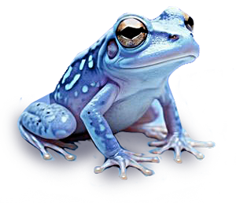

Exercice 13 | CSS et convention "B.E.M."
À Propos :
maintitle
Froggiesplaining :
La méthodologie BEM : explications
B.E.M. signifie “Blocks – Elements – Modifiers”
En français, cela donne “Blocs – Éléments – Modificateurs”. Ces trois entités vont permettre d’identifier et
d’organiser les composants de la page web :
Le bloc est le composant parent qui contient un ou plusieurs éléments (ex: un header, un menu, un footer…)
Les éléments appartiennent donc à un bloc, cela est considéré comme un composant enfant (ex: le titre d’un
bloc, les liens d’un menu, …) Les modificateurs sont des changements de style selon l’état du composant (ex:
un bloc change de couleur au clic, un style générique qui comporte une exception pour une page…)
Le but est de donner une classe la plus précise possible pour chaque composant. De cette façon nous savons
où se situe ce composant, quelle est son utilité et si son style est spécifique ou non à lui-même.
Exercice :
Reprennez une page d'un exercice précedent avec un conteneur et plusieurs éléments "enfants" et appliquez la
convention BEM dessus !
